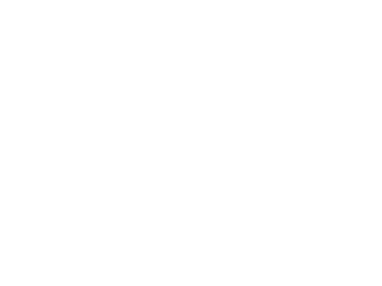
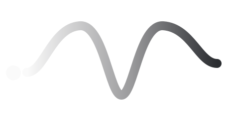

A modular synthesis toolkit built entirely inside TouchDesigner. Audio operators that patch together like Eurorack modules.
v0.1.0 BetaWhat is MOPs
ToolkitMOPs is a modular synthesis toolkit built entirely inside TouchDesigner. MOPs is a growing family of audio operators that work like Eurorack modules: oscillators, filters, envelopes, sequencers, effects, and semi-modular instruments that you patch together to build sound from the ground up. Everything lives natively in TouchDesigner, designed to create sound design or music that speaks the same language as your visuals.
The idea is to make digital synthesis approachable for anyone curious about sound, without sacrificing the depth that lets it grow with you. Start with a single voice and a few patch cables, or dig in and build a full modular rack. And because it's TouchDesigner, MOPs reaches for things only possible here: visual-input operators that turn shapes and textures into sequences and waveforms.
Showcase
04 videosDocumentation
v0.1.0 BetaThis version is a beta build, released to gather feedback ahead of the official launch. Expect rough edges, and please share anything you run into.
Drag and drop the .tox file into your project's root, then click Install in the Family tab. MOPs is built with TDFam, an open-source TouchDesigner operator-family framework created by Lyell Hintz / dotsimulate and Dan Molnar / function.str.
Once loaded, you can start building your first sound patch. Worked examples are provided in examples.toe, included with MOPs v0.1.0.
A few things to know before you start patching.
Why "CD" (Control Data) and not "CV"?
In Eurorack, modulation is carried by control voltage, an actual electrical voltage moving through a patch cable. Nothing in TouchDesigner is a voltage. Everything here is data: channels of numbers flowing between operators. So "control voltage" would borrow a name that doesn't describe what's actually happening, while "Control Data" does. It keeps the familiar modular concept of one signal shaping another, but names it in terms that make sense inside TouchDesigner, where data, not voltage, is the thing you're patching.
Audio and control data are kept separate
MOPs distinguish two kinds of signal: audio (the sound you hear) and control data (modulation, CD, gates, clocks that shape the sound). There are three cues that tell you which is which, any one of which is enough:
- Color. Control data is red (red inputs, red outputs, red operators). Audio is white (white inputs, white outputs, white operators).
- Port labels. Every input or output that carries control data has "cd" in its label (CD stands for Control Data). If you see "cd" on a port, it's control data, not audio. Think of a CD connection as a CHOP reference to a specific parameter, except it happens by wiring the ins and outs rather than by writing an expression.
- Operator shade. In the operator window, the audio operators are slightly darker than the control-data ones.
Use only one audio out
Don't scatter multiple audio-out operators across your patch. Sum your different sounds first, by running them through a Creative Mixer or a 4-channel Mixer, then send that single mixed signal to one audio out.
If you hear nothing, check the audio out first. Most "no sound" cases come down to the audio out being inactive or turned down. Confirm it's active and the volume is up before looking anywhere else.
The following patches are included in examples.toe:
- Simple step-sequenced Oscillator → Amplitude → lowpass Filter. A sequencer driving a single voice through amplitude and filter shaping.
- Keyboard into Wavetable OSC. Playing a wavetable oscillator from keyboard input.
- 4 Oscillators / 4 phased LFO mixing. Four oscillators modulated by four phase-offset LFOs, summed through a mixer.
- Kick velocity input doesn't work properly yet.
- Reverb doesn't work properly. It sounds good on short sounds, but breaks down on longer or sustained signals.
- Rendering operators can cause FPS drops. If the operator viewer is rendering and your frame rate drops, close the viewer or use the CHOPViewer parameter on the Viewer page to toggle to the traditional CHOP viewer.
- FPS drops can shift the pitch, and this is normal. Audio in MOPs is tied to the frame rate, so an unstable FPS changes pitch. Keep your project at a fixed FPS to avoid this. Be aware that lowering the FPS lowers the pitch: going from 60 to 30 FPS drops every audio operator by one octave.
- Multiple step sequencers on the same clock can drift out of sync. When several step sequencers share the same clock (or clock divider), one or more of them can gradually drift so they're no longer on the same step. To realign them, select all the sequencers and trigger their manual reset at the same time, which snaps them back to a common step. For an automatic fix, send a clock signal into each sequencer's reset input so they re-sync on every reset pulse.
- POPs Sequencer and POPs Oscillator are experimental; they are subject to changes in the future.
Where MOPs is headed:
- More semi-modular paths. Pre-wired instrument operators, so you can start making sound right away without building a complex patch.
- POPs and TOPs inputs. More operators that take POPs or TOPs as input to generate control data or audio.
- Full documentation. Per-operator documentation and a complete family reference.
- Updated operator descriptions.
- Operator viewer rendering choice. A toggle between POP rendering and native CHOP rendering for the operator viewer.
Please send any feedback or recommendations through:
- Patreon: patreon.com/c/ilginicozu
- Instagram: @ilginicozu
- Email: ilginicozu@gmail.com

Get MOPs on Patreon ↗